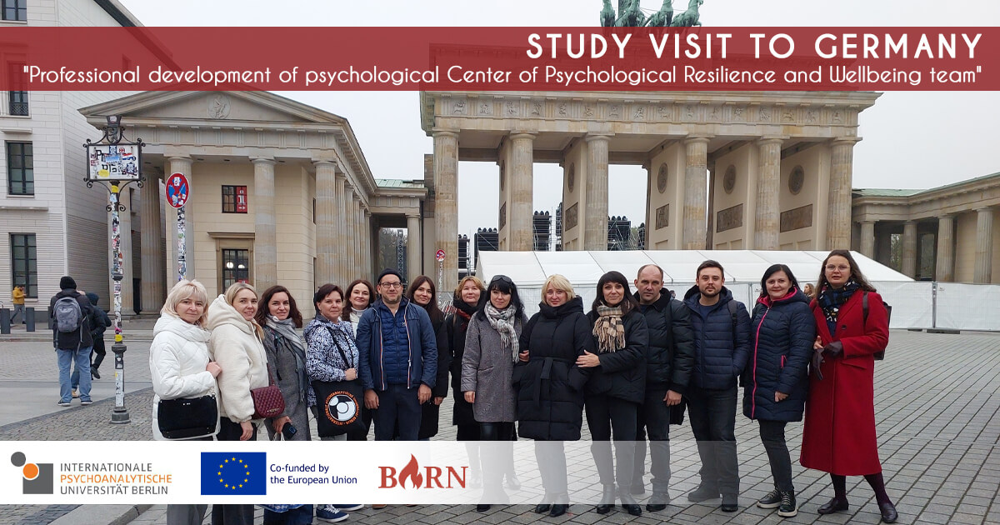

BURN Project Study Visit: Strengthening Psychological Resilience (Berlin, November 4-8, 2024)
The BURN Project's Berlin Study Visit focused on enhancing psychological resilience and trauma support strategies in crisis settings. This week-long initiative, organized by a network of international partners, aimed to expand resilience training and develop specialized psychological support strategies to address war-related trauma.

The visit commenced with a welcome from Professors Birgit Stürmer and Lars Kuchinke of the International Psychoanalytic University (IPU), who provided an insightful overview of mental health support during wartime. This opening set a thoughtful tone for the visiting group of psychology professionals and consortium members.
The delegation's first destination was ueberleben.org, a Berlin-based center offering culturally sensitive psychological services for refugees and migrants affected by conflict. The center's staff shared their community-centered approach to trauma care, emphasizing the significance of cultural sensitivity in resilience-building.
Later, IPU's International Office Head Carmen Scheer and Prof. Andreas Hamburger introduced the Social Trauma in Changing Societies (STICS) research network. Their presentation highlighted STICS's focus on collective trauma and community healing, offering practical insights on supporting post-conflict societies.
On November 5, the Ukrainian team visited Freie Universität Berlin (FU), where Dr. Stefan Petri, Director of FU’s Psychological Support Service, presented the university’s mental health initiatives. Discussions emphasized the importance of trauma-informed care for students, especially for Ukrainian psychologists working with internally displaced individuals and trauma-affected communities.
In the afternoon, Prof. Phil Langer led an engaging session on collaborative storytelling as a trauma-sensitive, participatory approach that fosters empowerment and healing for vulnerable groups. This method resonated with participants, sparking valuable dialogue on innovative trauma interventions.
On November 5-6, the delegation returned to IPU, where Dr. Lenka Staun, Head of the Outpatient Service, shared insights on group analysis practices. The team also explored IPU’s psychoanalytic library, which houses an extensive collection of resources on psychoanalysis and trauma studies.
The program included a roundtable led by Dr. David Baker on “Traumatic Processes and Staff Care.” Dr. Baker introduced the REST approach, a framework for supporting professionals in high-stress and conflict environments, providing essential strategies to bolster mental health resilience among those in the field. The delegation also visited #krisenchat, an online counseling service that supports young people in crisis throughout Germany and Ukrainians worldwide. This final day of sessions, led by Carmen Scheer, emphasized the center’s meaningful work and the dedication of its team, including Ukrainian psychologists. An in-depth workshop also addressed the unique needs of Ukrainian Higher Education Institutions' (HEIs) support centers. Professors Kuchinke and Langer guided participants through initial steps for advancing the BURN program, laying out a roadmap for continued development of trauma support systems. The study visit concluded with Prof. Lutz Wittman’s presentation on “Trauma and Psychoanalytical Trauma Interventions,” offering valuable techniques for trauma response that can be integrated into Ukrainian support centers. This enriching exchange strengthened knowledge-sharing between Ukraine and Germany, empowering Ukrainian professionals to bolster resilience and support systems during societal transformation. The BURN Project continues to build impactful bridges for collaboration and innovation in trauma care.